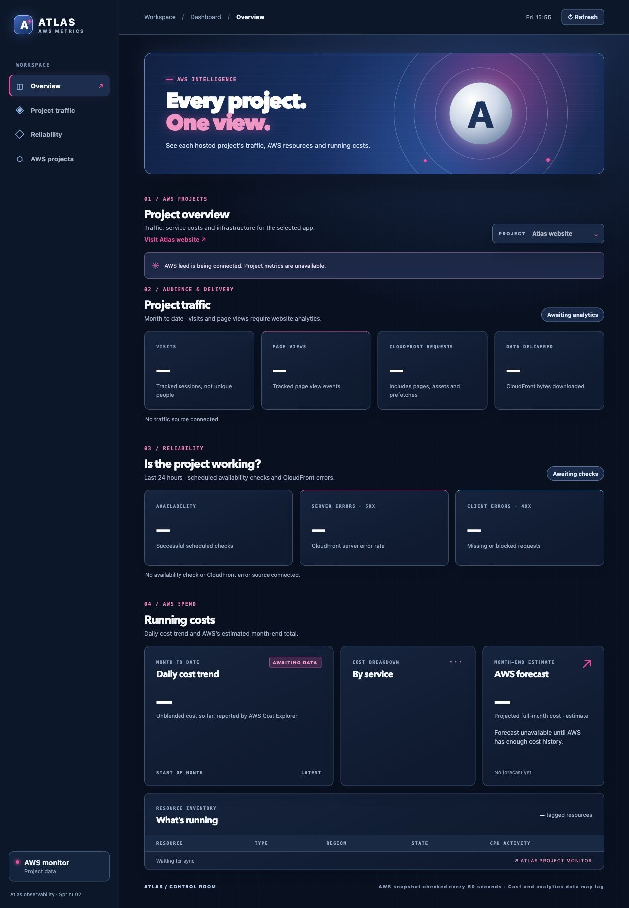

Project case study · Live on AWS
Atlas AWS Metrics Dashboard
The portfolio’s AWS costs, traffic and operational data in one place.
The Atlas AWS Metrics Dashboard is a working project hosted alongside the Atlas website on AWS, with the existing Atlas Preview password controlling access.
Opens in a new tab · Atlas Preview password required.
- Built with
- HTML, CSS, JavaScript & Python
- Live data
- AWS costs, CloudFront & consented visits
- Collector refresh
- Every 10 minutes

Understanding projects after deployment
Publishing an application is only the start. Understanding how it is being used, how it responds and what it costs means bringing information together from several AWS services.
This project creates one place to review those signals across the portfolio. The website is the first connected project, providing a working foundation for monitoring future applications.
A focused project view
Visitors select a card in Explore each project to open its detailed view and return to the overview when finished. Each view brings together available cost trends, costs by AWS service, traffic, CloudFront error rates and a resource inventory.
A distinct visual identity
The responsive interface uses dark blue, white and silver with hot pink accents, giving the monitoring project its own visual identity within the Atlas portfolio.
Understanding the AWS account total
The overview leads with the actual month-to-date AWS account cost from Cost Explorer. It shows the charges behind that total—direct project running costs, allocated Route 53 DNS, one-off domain charges and tax—then groups them into overall project running costs, setup and one-off charges, and shared or unattributed costs.
Allocated DNS is a share of the real AWS charge, so it is not added to the account total a second time.
The dashboard displays figures that AWS has supplied and clearly marks figures that are unavailable or only partly attributed.
From AWS metrics to the browser
A scheduled Python collector runs in AWS Lambda every ten minutes. It reads project information from AWS, selects the fields approved for display and publishes a JSON snapshot for the dashboard.
- 01 · Read
AWS data sources
CloudWatch supplies CloudFront delivery and opt-in visit metrics. The Resource Groups Tagging API identifies project resources. Cost Explorer supplies account and tagged project costs.
- 02 · Collect
Scheduled Lambda
Python assembles the project snapshot and removes private identifiers. Access to the monitored project resources is read-only.
- 03 · Publish
Private S3
The collector writes the approved snapshot to a dedicated object in the website bucket. Website deployments preserve this data.
- 04 · Display
CloudFront & browser
CloudFront serves the dashboard and snapshot over HTTPS. JavaScript renders the selected project behind the existing preview password.
Website and collector changes are deployed through GitHub Actions to the existing S3 and CloudFront setup.
The browser checks for a new snapshot every minute. AWS collection runs every ten minutes; source metrics can lag. Cost data is checked separately at a slower interval.
What is live today
Status as of 22 October 2026.
- CloudFront delivery Live
- Request counts and data delivered for the portfolio website. Requests include pages, assets and prefetches; they do not represent visits or page views.
- CloudFront error rates Live
- 4xx and 5xx rates provide delivery diagnostics. The preview password causes expected 4xx responses, so the 4xx rate is not an application failure rate.
- Collection & resource view Live
- A scheduled collector refreshes the published AWS snapshot every ten minutes. Project resources use generic labels in the visitor view.
- Costs & forecast Partly live
- The actual month-to-date AWS account total is live. The overview separates overall project running costs, setup and one-off charges, and shared or unattributed costs. Project trends, service costs and forecasts display available AWS figures, with incomplete attribution and unavailable values clearly marked.
- Visits & page views Connected
- After a visitor accepts the analytics notice, CloudWatch RUM counts sessions and page views. “Visits” means consenting sessions, not unique people. These counts stay separate from CloudFront requests, which also include images, scripts and other assets.
- Availability Planned
- Scheduled checks are needed to measure successful responses over time. Availability is not inferred from the current error rates.
A visitor view with clear boundaries
The dashboard is AWS-only. The published snapshot contains approved project metrics and generic resource labels. It excludes credentials, AWS account IDs, resource identifiers, invoices and payment details.
Project cost totals appear when AWS supplies them. Visitors receive the prepared snapshot; AWS credentials stay with the collector. The Atlas Preview password still controls access to the dashboard.
Website analytics is optional. CloudWatch RUM starts only after a visitor selects Allow analytics; it uses a short-lived session cookie and collects basic browser and device details. No persistent user cookie, advertising tracker, session replay or page content capture is enabled. The visitor can change the choice through Analytics settings.
Next steps
Add new projects to the dashboard as they go live on AWS, bringing their costs, traffic and operational data into the shared overview. Each project will follow the existing collection and privacy rules, with its own detailed view.
View live dashboard